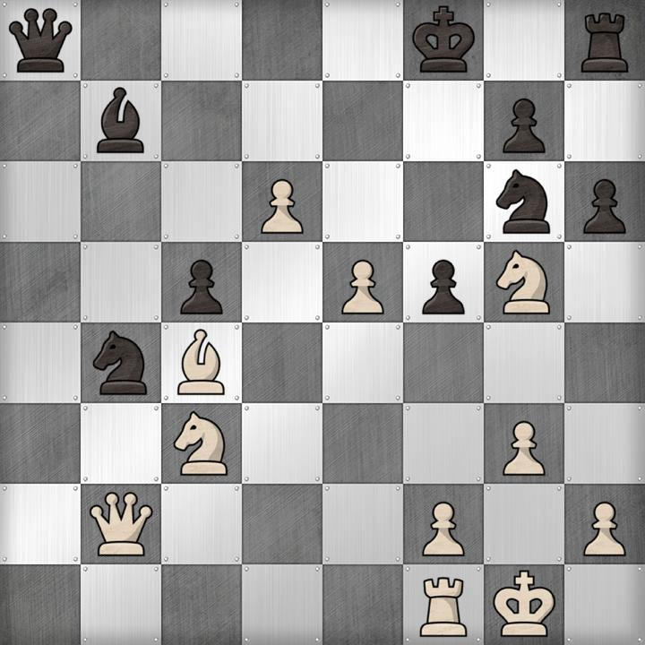
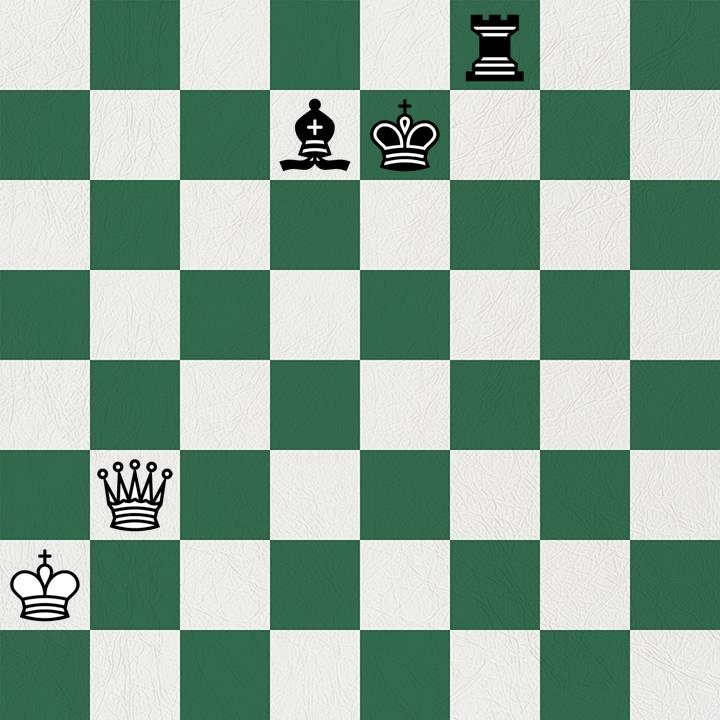
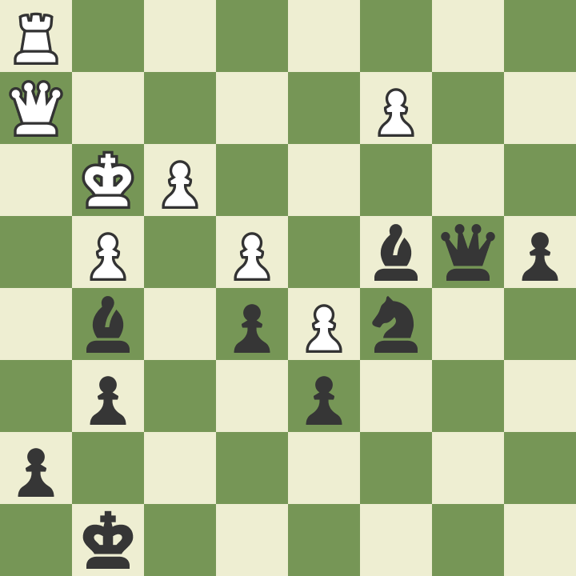
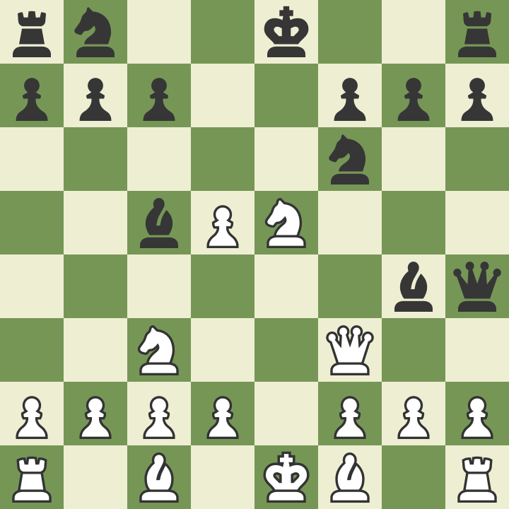
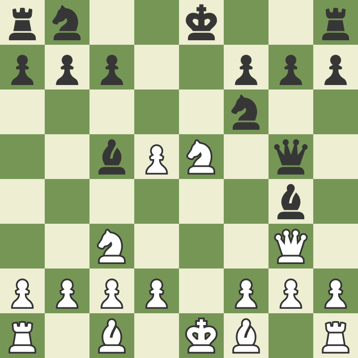

← Go to back to homepage
Chess Tactics
"My great teacher Mikhail Botvinnik used to say that the difference between players, when you look at weak players, stronger players, strong players, top players, world champions, at the end of the day it’s about the number of positions – or you may say number of patterns – he or she can recognize." - Garry Kasparov
"Tactics is knowing what to do when there is something to do. Strategy is knowing what to do when there is nothing to do." - Garry Kasparov
In this puzzle section, you can use tactics to find moves that will win material and win you the game.

How can you immediately punish black's last move, h6 and win material?
SOLUTION:
Ne6+. After this move, black's king must move, and has no good squares. If Ke8 is played, there is Nc7+, which will win the black queen on a8. Instead, after Ne6+, if the King goes to g8 or f7, there is a discovered attack after Nc7+ (the check comes from the Bishop), and the queen will be picked up. This will be an easily winning endgame for white.

In this situation, white is lost. What move should black play to win?
SOLUTION:
Using the concept of a pin, black can play Be6. After this, the white Queen will be lost, and black will checkmate with the Rook.

This is a position from one of my old games. What forcing move should I play, as black, to win material and win the game?
SOLUTION:
The move is Bf4+, which gives check to the White King. After the King moves, the Black Bishop will capture the opponent's Queen. After I played this move, my opponent resigned.

Here is a position from another game that I played a few years ago. My opponent, playing as Black, just played Bg4, a move that attacks my Queen. Should I play Pawn to g3, counterattacking their Queen?
SOLUTION:
No. If you work it out, you will see that after they take your Queen and you take their Queen, they will simply take your Rook.

Just one move later in the same game, my opponent blundered. How can white win material?
SOLUTION:
The move d4 attacks the Black Bishop, but also attacks the Queen. This is because my dark-squared Bishop's diagonal has been opened. My opponent ended up moving his Queen out of danger and winning a Pawn, but I won the Bishop. This tactic is called a discovered attack.